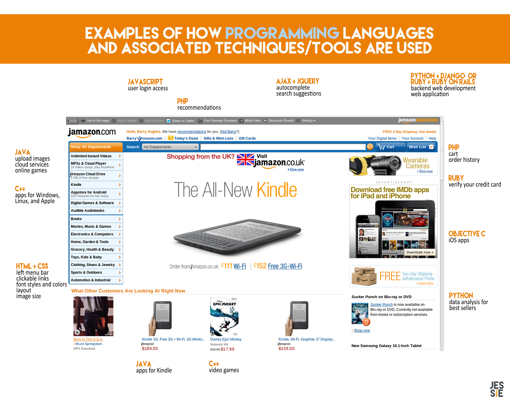

Wednesday, December 31, 2014
For this week's tech blog, we were assigned to research a topic and teach it to others. One thing that I was always curious about was the difference between programming languages. However, after reading millions of forums, articles, infographics, blog posts, tutorials and leaving thousands (thousands!! </exaggerate>) tabs opened, I realized what I was really wondering about was how were they used in our everyday online lives.
Check out.... jAmazon.com! The internet's hottest new mega online superstore! No one has ever heard of it, that's how cool it is. Here are some examples of how jAmazon's features are built with different programming languages and their associated techniques/tools.
Disclaimer: just like how there are many different words to write the same plot, you can use different programming languages to do the same things, each having their own advantages and disadvantages. I had to read through a lot of message forum spats between language loyalists, so take jAmazon lightly.
HTML stands for hypertext markup language and CSS stands for cascading style sheet. Basically, HTML provides the content through text and skeleton layout and CSS makes it look nice and pretty with colors, shadows, effects, etc. For jAmazon, HTML and CSS draws the user's attention by making the categories easy to read and clickable. We also see the theme colors are mostly white, blue, and orange.
If you compare HTML and CSS to the making of a book, HTML is the text that makes up the story and how it's divided into paragraphs, chapters, segments, etc, and CSS decides what font and font size to use, what the cover looks like, what material the paper is, etc.
Ruby is a scripting language and Ruby on Rails is its associated web framework. Fellow DBC student Rich McCluskey has a great analogy describing the relation between Ruby on Rails and Ruby: "Just like the wooden frame is used to build a house, a web framework, such as Rails, is used to build web applications. Rails combines Ruby with HTML, CSS, and Javascript and by doing so creates the structure of our web app. Without a framework, we would have to make all these connections ourselves and there would be lots of repetition. Our code would take longer to make, be more prone to bugs, and be harder to implement new things later on."
Like Ruby, Python is another type of scripting language and one of its most popular associated web frameworks is Django. Flash and Pyramid are also web frameworks for Python and if you'd like more information on choosing between those three, check out this article.
Programmers in the science and heavy super genius industries love Python. It is great for data analysis.
Java is a programming language that is used to create applications on your computer. In addition to commercially shot photos of the products, jAmazon allows buyers to upload their own images of the products they bought onto the product's page. This can be done with Java, which also allows you to play online games, take virtual tours, use interactive maps, and store your photos into its Cloud Drive. Cloud services can be written with different programming languages (Java, Python, Groovy, C#, etc) and the most appropriate one differs based on who you ask and what you need.
Javascript is a client-side scripting language that is embedded in most web browsers and makes websites interactive. For example, it will allow you to log into your jAmazon account by asking for your username and password. If either information is incorrect, Javascript will tell you. For more examples of how Javascript makes website really interesting, check out Creative Bloq's 42 Top Examples of JavaScript.
It is also important to note Java is not related to Javascript. Javascript was originally named Mocha and then Livescript before it was renamed to Javascript for marketing purposes.
SQL is a standardized query language for requesting information from a database. Your account information, among other people who use jAmazon, is stored with SQL, which interacts with databases and information. For example, if you pay for jAmazon prime membership, there is a database with records of your name, address, id number, credit card information, etc. If you unsubscribe, SQL can delete your record in the database.
Both are associated with Javascript- jQuery is a Javascript library and Ajax is a way to use Javascript, XML, and interrelated web techniques to create web applications. Ajax is used for chat systems, Gmail's interface, and Facebook's photos and chat. jQuery and Ajax allow jAmazon users to search for products with suggestions popping up in a drop down menu as they type out the product name, as well as autocompleting the product name.
C++ is usable among multiple devices: Apple, Android, Windows Phone, and Blackberry. jAmazon has a special app store for Android users since apps built for iPhone users aren't accessible on Android phones. C++ can develop apps for Windows and Linux, as well as mobile apps for Apple. It is also a popular programming language for game development, both PC and console. Other programming languages used for video games include Java and Python.
Objective C is an object oriented programming language that is used for Apple mobile apps by Apple developers. Apps created for the iPad and iPhone can be created by Objective C.
Like Ruby and Python, PHP is a scripting language. Some people are very loyal to PHP while others view PHP as being very messy. For jAmazon, PHP stores the user's order history, items in their cart, as well as product recommendations because PHP can collect form data, as well as add, delete, modify data in your database.
There you go! Next time you visit jAmazon.com or its competitor Amazon.com, think about how all the coding and different languages/techniques there are to make the website.
Main source: Learn the Language: What Code Should You Learn infographic